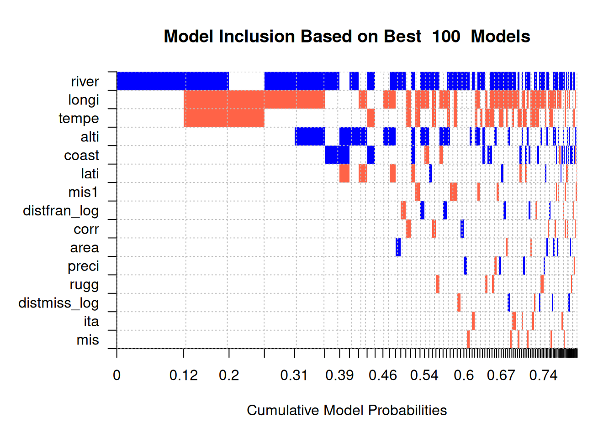

| Dependent Variable: | illiteracy | |||||||
| Model: | (1) | (2) | (3) | (4) | (5) | (6) | (7) | (8) |
| Variables | ||||||||
| Constant | -35.33\(^{***}\) | -53.74\(^{*}\) | -35.27 | -143.9\(^{**}\) | 69.26\(^{*}\) | -41.06 | 8.673\(^{***}\) | -80.72\(^{*}\) |
| (11.80) | (32.50) | (38.13) | (66.53) | (36.79) | (54.63) | (0.6942) | (43.89) | |
| distmiss | 0.0105\(^{***}\) | 0.0112\(^{**}\) | 0.0164\(^{*}\) | 0.0297\(^{***}\) | 0.0157\(^{**}\) | 0.0669\(^{***}\) | 0.0045 | 0.0138 |
| (0.0037) | (0.0050) | (0.0086) | (0.0105) | (0.0073) | (0.0220) | (0.0120) | (0.0270) | |
| lati | 0.5561\(^{**}\) | 0.0698 | 0.4078 | 4.575\(^{**}\) | 0.0837 | -9.338\(^{**}\) | ||
| (0.2382) | (0.7812) | (0.5531) | (1.807) | (0.7576) | (3.831) | |||
| longi | -1.108\(^{***}\) | -1.007\(^{*}\) | -1.022 | -5.694\(^{***}\) | 1.095 | 7.186\(^{**}\) | ||
| (0.2569) | (0.5556) | (0.6895) | (1.811) | (0.8035) | (2.676) | |||
| corr | -5.341\(^{***}\) | -6.032\(^{***}\) | 3.771\(^{**}\) | -3.043 | ||||
| (1.286) | (1.583) | (1.850) | (3.644) | |||||
| ita | -3.187\(^{***}\) | -2.409\(^{***}\) | -0.2311 | 0.8290 | ||||
| (0.7275) | (0.8327) | (0.8318) | (2.316) | |||||
| mis | -4.324\(^{***}\) | -4.734\(^{***}\) | ||||||
| (1.122) | (1.488) | |||||||
| mis1 | -3.279\(^{***}\) | -2.299\(^{**}\) | ||||||
| (0.8603) | (0.9745) | |||||||
| area | 0.0001 | -0.0002 | \(-8.9\times 10^{-5}\) | 0.0004 | ||||
| (0.0002) | (0.0004) | (0.0003) | (0.0007) | |||||
| tempe | 0.0587 | -0.0625 | 0.9675\(^{***}\) | 0.3598 | ||||
| (0.0774) | (0.1242) | (0.2371) | (0.2201) | |||||
| alti | 0.0057 | 0.0006 | 0.0654\(^{***}\) | 0.0160 | ||||
| (0.0036) | (0.0053) | (0.0113) | (0.0143) | |||||
| preci | -0.0026 | 0.0010 | -0.0171\(^{**}\) | 0.0001 | ||||
| (0.0022) | (0.0032) | (0.0084) | (0.0052) | |||||
| rugg | \(-3.56\times 10^{-6}\) | \(-3.09\times 10^{-6}\) | \(-4.8\times 10^{-5}\)\(^{**}\) | \(6.93\times 10^{-5}\) | ||||
| (\(4.57\times 10^{-6}\)) | (\(4.49\times 10^{-6}\)) | (\(1.84\times 10^{-5}\)) | (\(4.83\times 10^{-5}\)) | |||||
| river | 1.470\(^{**}\) | 1.723\(^{*}\) | 9.795\(^{***}\) | 0.9834 | ||||
| (0.7121) | (0.8932) | (2.173) | (5.492) | |||||
| coast | 0.2086 | -4.976\(^{**}\) | 1.889 | 0.8264 | ||||
| (0.8945) | (2.147) | (3.522) | (4.557) | |||||
| mesorregi4302 | -2.720\(^{***}\) | -2.543\(^{**}\) | ||||||
| (0.8625) | (1.037) | |||||||
| mesorregi4303 | -0.4829 | -0.3830 | ||||||
| (1.133) | (1.228) | |||||||
| mesorregi4304 | -0.7711 | 0.1960 | ||||||
| (1.150) | (1.403) | |||||||
| mesorregi4305 | -3.023\(^{**}\) | -1.290 | ||||||
| (1.312) | (1.541) | |||||||
| mesorregi4306 | -1.724 | -3.421 | ||||||
| (2.015) | (2.184) | |||||||
| mesorregi4307 | -0.4368 | 0.3267 | ||||||
| (2.553) | (2.634) | |||||||
| Fit statistics | ||||||||
| Observations | 549 | 548 | 467 | 467 | 42 | 42 | 40 | 39 |
| R\(^2\) | 0.04178 | 0.07299 | 0.09402 | 0.13481 | 0.16514 | 0.66887 | 0.00359 | 0.25135 |
| Adjusted R\(^2\) | 0.02938 | 0.04864 | 0.07618 | 0.10405 | 0.07488 | 0.54745 | -0.05027 | 0.01901 |
| Heteroskedasticity-robust standard-errors in parentheses | ||||||||
| Signif. Codes: ***: 0.01, **: 0.05, *: 0.1 | ||||||||
BMA with Different Distance Measures
Replication of Original Table II from Paper
BMA with Linear Distance
Raw Output
Warning in bms(X.data = literacy_matrix, burn = 10000, iter = 1e+05, nmodel =
100, : Argument 'X.data' contains NAs. The corresponding rows have not been
taken into account. PIP Post Mean Post SD Cond.Pos.Sign Idx
river 0.69867 1.446216e+00 1.121947e+00 1.00000000 13
longi 0.52823 -2.218936e-01 2.589178e-01 0.00045435 3
tempe 0.35238 -2.080411e-02 3.322487e-02 0.02048924 9
alti 0.32611 8.664496e-04 1.488184e-03 0.99138328 10
distfran 0.16913 -7.003667e-04 2.503660e-03 0.11482292 15
lati 0.16844 -9.995246e-02 2.963436e-01 0.14984564 2
coast 0.15367 4.728874e-02 2.095954e-01 0.84225939 14
mis1 0.08906 -1.213834e-01 4.989661e-01 0.00000000 7
distmiss 0.07656 1.591816e-04 1.389363e-03 0.62813480 1
corr 0.06667 -7.181396e-02 4.656137e-01 0.20728964 4
rugg 0.05431 -2.157356e-07 1.341703e-06 0.00000000 12
area 0.04775 3.794580e-06 4.536367e-05 0.69633508 8
preci 0.04751 -1.891518e-05 3.683141e-04 0.44559040 11
ita 0.04654 -3.537556e-02 2.502970e-01 0.00128921 5
mis 0.04506 -4.080737e-02 3.546840e-01 0.02063915 6
Mean no. regressors Draws Burnins Time
"2.8701" "1e+05" "10000" "3.45099 secs"
No. models visited Modelspace 2^K % visited % Topmodels
"22992" "32768" "70" "77"
Corr PMP No. Obs. Model Prior g-Prior
"0.9985" "548" "fixed / 7" "UIP"
Shrinkage-Stats
"Av=0.9982"
Time difference of 3.45099 secs
Image
Density Plots
BMA with Linear Distance, Fixed Distance Inclusion
Raw Output
Warning in bms(X.data = literacy_matrix, burn = 10000, iter = 1e+05, nmodel =
100, : Argument 'X.data' contains NAs. The corresponding rows have not been
taken into account. PIP Post Mean Post SD Cond.Pos.Sign Idx
distmiss 1.00000000 1.636298e-03 4.585121e-03 0.56647359 1
river 0.70468948 1.485777e+00 1.133122e+00 1.00000000 13
longi 0.42117640 -2.144707e-01 3.028585e-01 0.00898567 3
alti 0.41738146 1.289011e-03 1.778195e-03 0.99527622 10
tempe 0.23242237 -1.307133e-02 2.887653e-02 0.02602319 9
distfran 0.19928685 -1.979145e-03 4.972860e-03 0.04078397 15
lati 0.17247280 -1.474871e-01 3.909901e-01 0.03414446 2
corr 0.11084064 -2.310068e-01 8.611874e-01 0.12016693 4
coast 0.09068208 3.064500e-02 1.867312e-01 0.78758078 14
mis1 0.07851509 -1.157869e-01 5.022366e-01 0.00000000 7
ita 0.05860644 -6.360258e-02 3.631635e-01 0.00018779 5
rugg 0.04791879 -1.905332e-07 1.273518e-06 0.00000000 12
area 0.04511377 4.019995e-06 4.333280e-05 0.71971079 8
mis 0.04421833 -4.887042e-02 3.841946e-01 0.03879240 6
preci 0.04409001 -9.066185e-06 4.172229e-04 0.39441688 11
Mean no. regressors Draws Burnins Time
"3.6674" "16384" "0" "0.6256135 secs"
No. models visited Modelspace 2^K % visited % Topmodels
"16384" "32768" "50" "0.61"
Corr PMP No. Obs. Model Prior g-Prior
"NA" "548" "fixed / 7" "UIP"
Shrinkage-Stats
"Av=0.9982"
Time difference of 0.6256135 secs
Image
Density Plots

BMA with Exponential Distance (λ = 1/200)
Raw Output
Warning in bms(X.data = literacy_matrix, burn = 10000, iter = 1e+05, nmodel =
100, : Argument 'X.data' contains NAs. The corresponding rows have not been
taken into account. PIP Post Mean Post SD Cond.Pos.Sign Idx
river 0.69751 1.440159e+00 1.118791e+00 1.00000000 13
longi 0.60293 -2.617866e-01 2.661884e-01 0.00008293 3
tempe 0.35299 -2.027727e-02 3.259595e-02 0.02113374 9
alti 0.30318 7.459507e-04 1.345270e-03 0.99488753 10
coast 0.17514 5.886223e-02 2.212802e-01 0.86222451 14
lati 0.11155 -4.788580e-02 2.011011e-01 0.22770058 2
distmiss_exp 0.08032 -1.073072e-01 6.538938e-01 0.25373506 1
mis1 0.07981 -1.056315e-01 4.649091e-01 0.00000000 7
distfran_exp 0.07715 -1.497578e-01 8.746671e-01 0.19844459 15
corr 0.07511 -1.003948e-01 5.598048e-01 0.18346425 4
preci 0.05876 -7.672082e-07 4.052254e-04 0.60330157 11
area 0.05761 3.945597e-06 5.014175e-05 0.64502691 8
rugg 0.05672 -2.207361e-07 1.357363e-06 0.00000000 12
mis 0.04914 -4.511446e-02 3.691689e-01 0.01221001 6
ita 0.04901 -3.220928e-02 2.430998e-01 0.02040400 5
Mean no. regressors Draws Burnins Time
"2.8269" "1e+05" "10000" "3.154461 secs"
No. models visited Modelspace 2^K % visited % Topmodels
"23164" "32768" "71" "79"
Corr PMP No. Obs. Model Prior g-Prior
"0.9964" "548" "fixed / 7" "UIP"
Shrinkage-Stats
"Av=0.9982"
Time difference of 3.154461 secs
Image
Density Plots
BMA with Exponential Distance (λ = 1/200), Fixed Distance Inclusion
Raw Output
Warning in bms(X.data = literacy_matrix, burn = 10000, iter = 1e+05, nmodel =
100, : Argument 'X.data' contains NAs. The corresponding rows have not been
taken into account. PIP Post Mean Post SD Cond.Pos.Sign Idx
distmiss_exp 1.00000000 -1.262948e+00 1.922743e+00 0.28711596 1
river 0.66923810 1.386347e+00 1.136418e+00 1.00000000 13
longi 0.63069289 -3.641624e-01 3.517951e-01 0.00009460 3
alti 0.45197241 1.186613e-03 1.500361e-03 0.99842987 10
corr 0.19492097 -5.394721e-01 1.298938e+00 0.04840534 4
tempe 0.18599919 -9.784013e-03 2.490754e-02 0.02403512 9
coast 0.16393838 8.578416e-02 2.699744e-01 0.89013861 14
lati 0.09143105 -4.567058e-02 2.088180e-01 0.16900758 2
preci 0.07017899 9.636855e-05 6.936139e-04 0.82699139 11
mis1 0.07011559 -9.388803e-02 4.396631e-01 0.00000000 7
distfran_exp 0.05905316 -1.188914e-01 7.708301e-01 0.14271437 15
rugg 0.04665712 -1.794800e-07 1.242064e-06 0.00000000 12
mis 0.04548022 -5.326502e-02 3.885213e-01 0.00089791 6
ita 0.04490881 -3.250809e-02 2.418312e-01 0.01462017 5
area 0.04224354 2.835363e-06 4.123778e-05 0.66472343 8
Mean no. regressors Draws Burnins Time
"3.7668" "16384" "0" "0.6313264 secs"
No. models visited Modelspace 2^K % visited % Topmodels
"16384" "32768" "50" "0.61"
Corr PMP No. Obs. Model Prior g-Prior
"NA" "548" "fixed / 7" "UIP"
Shrinkage-Stats
"Av=0.9982"
Time difference of 0.6313264 secs
Image
Density Plots
BMA with Logarhitmic Distance
Raw Output
Warning in bms(X.data = literacy_matrix, burn = 10000, iter = 1e+05, nmodel =
100, : Argument 'X.data' contains NAs. The corresponding rows have not been
taken into account. PIP Post Mean Post SD Cond.Pos.Sign Idx
river 0.71324 1.475009e+00 1.111722e+00 1.00000000 13
longi 0.55748 -2.325991e-01 2.548620e-01 0.00000000 3
alti 0.33043 8.239852e-04 1.402098e-03 0.99385649 10
tempe 0.31613 -1.809952e-02 3.137135e-02 0.02372442 9
coast 0.20673 6.841126e-02 2.437670e-01 0.84709525 14
lati 0.13434 -6.817989e-02 2.418915e-01 0.18542504 2
mis1 0.08211 -1.076032e-01 4.671631e-01 0.00000000 7
distfran_log 0.07737 2.904605e-02 2.473104e-01 0.66524493 15
corr 0.06374 -5.968908e-02 4.130005e-01 0.22278004 4
rugg 0.06073 -2.342372e-07 1.396706e-06 0.00000000 12
distmiss_log 0.05546 4.999146e-03 6.279332e-02 0.67868734 1
preci 0.05078 -1.067526e-05 3.507281e-04 0.56577393 11
ita 0.04840 -3.241097e-02 2.406869e-01 0.01033058 5
area 0.04681 4.500493e-06 4.601637e-05 0.74962615 8
mis 0.04003 -3.656119e-02 3.324357e-01 0.00424681 6
Mean no. regressors Draws Burnins Time
"2.7838" "1e+05" "10000" "3.087323 secs"
No. models visited Modelspace 2^K % visited % Topmodels
"22719" "32768" "69" "80"
Corr PMP No. Obs. Model Prior g-Prior
"0.9954" "548" "fixed / 7" "UIP"
Shrinkage-Stats
"Av=0.9982"
Time difference of 3.087323 secs
Image

Density Plots
BMA with Logarithmic Distance, Fixed Distance Inclusion
Raw Output
Warning in bms(X.data = literacy_matrix, burn = 10000, iter = 1e+05, nmodel =
100, : Argument 'X.data' contains NAs. The corresponding rows have not been
taken into account. PIP Post Mean Post SD Cond.Pos.Sign Idx
distmiss_log 1.00000000 6.587094e-02 2.499937e-01 0.60398509 1
river 0.69912749 1.471627e+00 1.134212e+00 1.00000000 13
longi 0.54244871 -2.399866e-01 2.645085e-01 0.00003844 3
alti 0.32758469 8.014208e-04 1.343526e-03 0.99717974 10
tempe 0.25407275 -1.435702e-02 2.888314e-02 0.01942052 9
coast 0.16573216 6.796450e-02 2.349253e-01 0.89266125 14
lati 0.10316546 -5.300045e-02 2.198999e-01 0.19266322 2
corr 0.08409363 -1.296143e-01 6.198959e-01 0.16726521 4
mis1 0.06847913 -9.025967e-02 4.303758e-01 0.00000000 7
distfran_log 0.05627332 1.884463e-02 2.059419e-01 0.66182731 15
preci 0.04824971 6.118169e-06 4.054532e-04 0.64168411 11
rugg 0.04690097 -1.815436e-07 1.237511e-06 0.00000000 12
area 0.04685376 4.056342e-06 4.525481e-05 0.75778700 8
ita 0.04305940 -2.942957e-02 2.295508e-01 0.00978503 5
mis 0.03995351 -3.723502e-02 3.318213e-01 0.00066129 6
Mean no. regressors Draws Burnins Time
"3.5260" "16384" "0" "0.6209462 secs"
No. models visited Modelspace 2^K % visited % Topmodels
"16384" "32768" "50" "0.61"
Corr PMP No. Obs. Model Prior g-Prior
"NA" "548" "fixed / 7" "UIP"
Shrinkage-Stats
"Av=0.9982"
Time difference of 0.6209462 secs
Image
Density Plots
BMA with Gaussian Distance (exp(-(d²)/(2*100²)))
Raw Output
Warning in bms(X.data = literacy_matrix, burn = 10000, iter = 1e+05, nmodel =
100, : Argument 'X.data' contains NAs. The corresponding rows have not been
taken into account. PIP Post Mean Post SD Cond.Pos.Sign Idx
river 0.69184 1.422201e+00 1.118226e+00 1.00000000 13
longi 0.58903 -2.530052e-01 2.618279e-01 0.00005093 3
tempe 0.32609 -1.874966e-02 3.147003e-02 0.01931982 9
alti 0.31781 8.050972e-04 1.396269e-03 0.99452503 10
coast 0.22745 8.654451e-02 2.648598e-01 0.86950978 14
lati 0.14344 -7.666811e-02 2.606714e-01 0.18816230 2
distfran_gau 0.13617 -2.681804e-01 8.187465e-01 0.01241096 15
mis1 0.08242 -1.098959e-01 4.734129e-01 0.00000000 7
corr 0.08083 -9.740161e-02 5.218657e-01 0.15192379 4
distmiss_gau 0.07518 -7.646571e-02 4.055420e-01 0.14205906 1
area 0.05737 4.116010e-06 4.935304e-05 0.68119226 8
preci 0.05733 -5.178994e-06 4.164701e-04 0.57683586 11
rugg 0.05636 -2.209145e-07 1.355993e-06 0.00000000 12
ita 0.04464 -2.368308e-02 2.270738e-01 0.09005376 5
mis 0.04156 -3.531433e-02 3.361037e-01 0.02550529 6
Mean no. regressors Draws Burnins Time
"2.9275" "1e+05" "10000" "3.318154 secs"
No. models visited Modelspace 2^K % visited % Topmodels
"23625" "32768" "72" "76"
Corr PMP No. Obs. Model Prior g-Prior
"0.9974" "548" "fixed / 7" "UIP"
Shrinkage-Stats
"Av=0.9982"
Time difference of 3.318154 secs
Image
Density Plots


BMA with Gaussian Distance (exp(-(d²)/(2*100²))), Fixed Distance Inclusion
Raw Output
Warning in bms(X.data = literacy_matrix, burn = 10000, iter = 1e+05, nmodel =
100, : Argument 'X.data' contains NAs. The corresponding rows have not been
taken into account. PIP Post Mean Post SD Cond.Pos.Sign Idx
distmiss_gau 1.00000000 -9.198987e-01 1.128586e+00 0.18498018 1
river 0.70170507 1.463819e+00 1.122933e+00 1.00000000 13
longi 0.63267419 -3.294866e-01 3.093023e-01 0.00082402 3
alti 0.36343762 8.683568e-04 1.328625e-03 0.99753026 10
coast 0.22404065 1.258240e-01 3.070471e-01 0.93143338 14
tempe 0.18737466 -9.753141e-03 2.432201e-02 0.01957163 9
distfran_gau 0.15500804 -3.401437e-01 9.308036e-01 0.00039614 15
corr 0.15355300 -3.664897e-01 1.038050e+00 0.04698981 4
lati 0.10297943 -5.129226e-02 2.183004e-01 0.17682742 2
preci 0.08358695 1.301521e-04 7.364099e-04 0.85537124 11
mis1 0.06695172 -8.693937e-02 4.222180e-01 0.00000000 7
rugg 0.04524681 -1.669238e-07 1.201569e-06 0.00000000 12
mis 0.04401306 -4.861262e-02 3.761385e-01 0.01545882 6
ita 0.04282861 -2.229209e-02 2.366549e-01 0.12758516 5
area 0.04177174 2.518872e-06 4.064318e-05 0.67963346 8
Mean no. regressors Draws Burnins Time
"3.8452" "16384" "0" "0.6501999 secs"
No. models visited Modelspace 2^K % visited % Topmodels
"16384" "32768" "50" "0.61"
Corr PMP No. Obs. Model Prior g-Prior
"NA" "548" "fixed / 7" "UIP"
Shrinkage-Stats
"Av=0.9982"
Time difference of 0.6501999 secs
Image
Density Plots